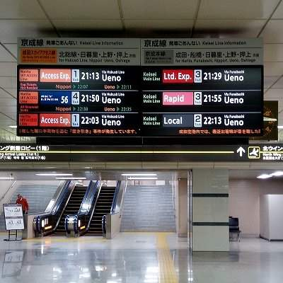
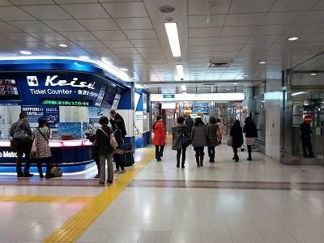
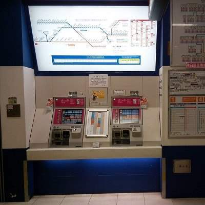
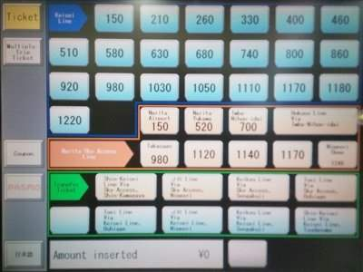
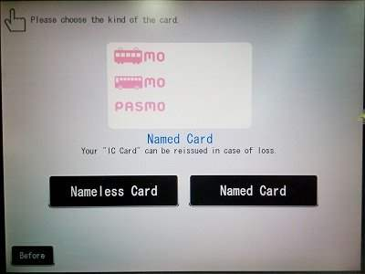
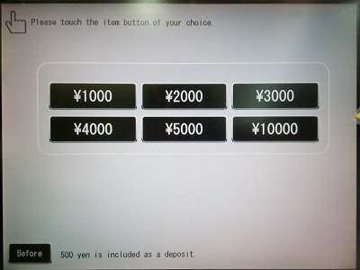
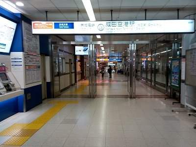
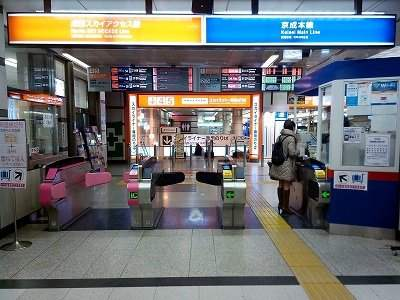
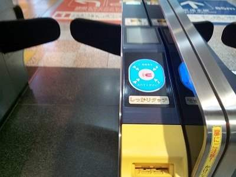
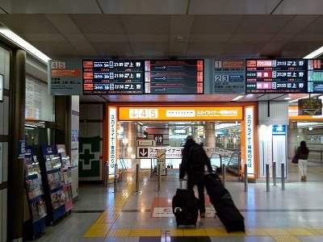

Keisei 'Limited Express' - What is it?
keisei Electric Railway Co., Ltd. offers a reasonable and moderately fast way from Narita Airport to Tokyo - Keisei 'Limited Express'. Its price could hardly be beaten - 1,100 ～ 1,240 yen to Asakusa or Ueno. If you are a backpacker and planning to stay in Asakusa, this is probably the best choice. All seats are free, but you can easily get a seat because but Narita Airport is the starting station.
Rush hour? Don't worry. Narita Airport is the first station, so usually it is easy to have a seat.
For more luxurious travel, Keisei's Skyliner is 'another' kind of 'Limited Express' offered for an extra fee. It is faster and more comfortable with compulsory seat reservation. Free WiFi is also available on board. Its maximun speed is 160 km/h and stops at only four stations:
- Narita Airport Terminal 1
- Narita Airport Terminal 2, 3
- Nippori
- Ueno
As you can see, Skyliner stops nowhere between the airport and the Yamanote Line circle.
Nippori and Ueno are both on the Yamanote Line circle and just a few minutes from each other.
Destinations of Keisei 'Limited Express'
Apart from the prices, the most important difference between the two types of Limited Express trains is that Skyliner goes only to Ueno station, while other limited express trains operate direcctly to varying destinations including Ueno, Asakusa, Shimbashi, Shinagawa and Yokohama.
Getting straight to Ueno is not bad at all. Nippori and Ueno are on the circular Yamanote Line which connects most of major train stations of Tokyo, including Tokyo, Akihabara, Shimbashi, Shinagawa, Shibuya, Harajuku, Shinjuku, Ikebukuro and so on.
If your destination is Asakusa, take a Ginza Line of Tokyo Metro, from Ueno station. It takes 5 minutes and 170 yen. And if you prefer to take a taxi, nothing is easier than catching a taxi in front of Ueno station.
'Ordinary' limited express trains - i.e. not Skyliners - are directly connected through Toei Asakusa subway and Keikyu Line trains, just like a single line. For example, on weekdays a limited express train leaves Narita Airport at 16:04 and arrives at Yokohama station at 17:54. For this train you don't even need to transfer. By the way, the price for this ticket is 1,690 yen. But this kind of direct train doesn't run very often, so if you are going to Shimbashi, Yokohama or Yokosuka, just go to Takasago or Aoto station and then hop on another train in your direction.
Some trains even go directly through rails of Toei Asakusa Line and Keikyu Line. If you choose those trains, you can get to Shimbashi, Shinagawa, Haneda-Airport and Yokohama without transfer, or an easy transfer on the same platform.
Time and Ticket Prices to Major Destinations by Keisei Trains
The following is a list of ticket prices to major destinations from Narita airport (August 2023):
- to Asakusa - 1,110 yen 1h 15 min (through Main Line)
- to Asakusa - 1,310 yen 1h (through Sky Access Line)
- to Keisei-Ueno - 1,050 yen 1h 20 min (through Main Line)
- to Keisei-Ueno - 1,270 yen 1h 10 min (through Sky Access Line)
- to Keisei-Ueno - 2,570 yen 0h 41 min (by Skyliner)
- to Nippori - 1,050 yen 1h 16 min (through Main Line)
- to Nippori - 1,270 yen 1h 05 min (through Sky Access Line)
- to Nippori - 2,570 yen 0h 36 min (by Skyliner)
- to Shimbashi - 1,150 yen 1h 40 min (through Main Line) by direct train - otherwise add transfer time)
- to Shimbashi - 1,350 yen 1h 09 min (through Sky Access Line) by direct train - otherwise add transfer time)
- to Yokohama - 1,530 yen 2h 10min (through Main Line) Assume transfer, add transfer time)
- to Yokohama - 1,730 yen 1h 47min (through Sky Access Line) Assume transfer. add transfer time)
- to Yokosuka-Chuo - 1,940 yen 2h 38min (through Main Line) Assume transfer. add transfer time)
- to Yokosuka-Chuo - 2,140 yen 2h 16min (through Sky Access Line) Assume transfer. add transfer time)
You can find discount tickets for Skyliner at Keisei's official website in English:
https://www.keisei.co.jp/keisei/tetudou/skyliner/us/index.php
Notes on Transfer:
- You can easily switch between Keisei Main Line and Keisei Sky Access Line at Aoto or Takasago station.
Just get off your train and probably you can hop on a train which arrives on the other side of the same platform.
Ask someone around you if it is your train, using the mini-phrasebook at the bottom of this page.
- There is no JR station at Asakusa. JR Asakusa-bashi station is a bit far from Asakusa town.
- Keisei-Ueno station is 5 minutes walk from JR Ueno station.
- Keisei-Kawasaki station is very far from JR Kawasaki station. So forget about transfer here.
- Yokohama station of Keisei Line is at the same location as JR Yokohama station. Transfer is easy.
- Yokosuka-Chuo station is 25 minutes walk from JR Yokosuka station. (It's easy to pick up a taxi.) If you need to get to JR Yokosuka station, I'd recommend taking JR Sobu-Yokosuka Line. It goes to Tokyo, Kawasaki, Yokohama and Yokosuka stations without transfer.
See: Narita Airport → Tokyo by Sobu-Yokosuka Line
PASMO or SUICA Makes Your Trip Easier!
Nothing is more useful than a PASMO or SUICA (prepaid IC card) for getting around in Tokyo.
With 'PASMO' IC card, you can skip all the price calculations, and just touch the gates with you card. You can get a full refund of the 500 yen deposit and remaining balance at train or metro stations where a PASMO is sold. (All metro stations sell PASMO, too.) You can ride trains and buses using an IC card called PASMO. You can buy a PASMO card at Keisei train station of Narita Airport, too. PASMO is functionally identical to SUICA which issued only by JR. You can ride almost any JR train with a PASMO, too (except for Shinkansen). You can use PASMO at most shops and restaurants and vending machines at, but not limited to, train or metro stations. For details, see:
How to buy and use PASMO & SUICA
Sign Board for Trains
The sign board contains almost all information you need except for prices:
- Route (SkyAceess route or main route - which doesn't really matter if you are going to Asakusa, Ueno, Nippori or further)
- Type of train (Choose almost any - except for 'Local' which I wouldn't recommend because of many stops)
- Track number of departure
- Departure time
- Final destination (On the photo below, all trains go to Ueno, which means that they will not go to Asakusa. But, if you want to go to Asakusa, you can take those trains and change trains at Takasago or Aoto station. The transfer is easy - usually on the same platform from on side to another.
First, choose a train, and then buy a ticket. Buying and using an IC card called PASMO is much easier, faster and more flexible than using paper tickets. For more details on PASMO see
SUICA and PASMO.
Skyliner needs an add-on ticket which you can buy from the ticket machine, from a counter near the panel (blue-colored corner counter on the photo) or online with some discount. You can ride all other Keisei trains with no additional fares, just going through the gate with your PASMO or a paper ticket for base fare.

Keisei Ticket Counter
Locate the Keisei Line Ticket counter. You can see the gate ahead, and ticket machines around it.
If you want a Skyliner add-on ticket, buy it here from the staff. They 'probably' speak English. Good luck.

Buying a PASMO or a paper ticket from a ticket machine
The ticket machine is next to the information counter.
The big panel above shows the ticket prices for each destination. If you are going to buy a PASMO, don't worry too much. But if you want to use a paper ticket, you need to know the exact price. Ask staff if you are unsure.

You can buy a PASMO or a paper ticket as follows:
On the touch screen,
1. Select
"English" on top screen. The following screen appears. Then select
"PASMO" on the leftmost column.
Or you can also buy a paper ticket now, but it is a bit more difficut - here is how:
(If you want to buy a PASMO, skip the following #1, #2 and proceed to the next section. Don't worry, it won't take much time.)
#1: Press a button according to your route and price:
- Keisei Main Line - Press a price button after the blue arrorw.
- Sky Access Line (Not Skyliner) - Press a price button after the red arrorw. (This price doesn't include the additional Sky Access fee.)
- If you are going to Asakusa, Shimbashi, Shinagawa, Yokohama, etc. then choose a button after the green arrow, which indicates your destination. (Buttons after the green arrow are for transfer tickets.)
#2: Insert cash. Get your ticket and changes. That's it!

2. Select "Nameless Card".

3. Select initial amount including deposit. The price includes 500 yen deposit. If you are not sure how much amount you want, buy a card for 3000 yen (500 deposit + 2500 ticket). It will be enough for going to almost anywhere in metropolitan Tokyo (Ueno, Shinjuku, Shinagawa, Ikebukuro, Yokohama, etc.) The deposit and the remaining amount fully refundable at any time without any fees, at almost any train station where PASMOs are sold. It is a good idea to have some extra amount of deposit, because you can use pasmo at almost all kiosks, cafes, restaurants, vending machines (when you are thirsty, you can buy a bottle of water with PASMO), almost all convenience stores including Seven Eleven, Lawson and Family Mart, and many more shops and cafes. PASMO is totally compatible with SUICA which is issued only by JR, so you will not need both.
After you press a price button, the machine prompts you to insert money. Don't forget to take your PASMO and changes. OK, you've got your PASMO? Now you can go to the gate!

Going to the gate
Proceed to the gate.

Now you are at the gate.

Going through the gate to the platform
When you go through the gate, touch on the blue pad with your PASMO, if you are using your PASMO.
If you are using a paper ticket, insert it into the yellow slot, and don't forget to pick up your ticket from another slot ahead. (Many people forget this!) Some gates are only for PASMO, so if you are using a paper ticket, choose a gate with a slot.

Follow the signs and proceed to your track. Depending on the type of your train, you may have to go through another gate, using your PASMO or paper ticket again. In particular, Skyliner tracks can be reached only through that additional gate. You can ride any limited express Keisei train just with you PASMO, unless that train is a 'Skyliner' or some other 'Liner' which requires additional seat reservation.

Keisei Line Timetables Links
You can find links to Keisei Line timetables in English
here.